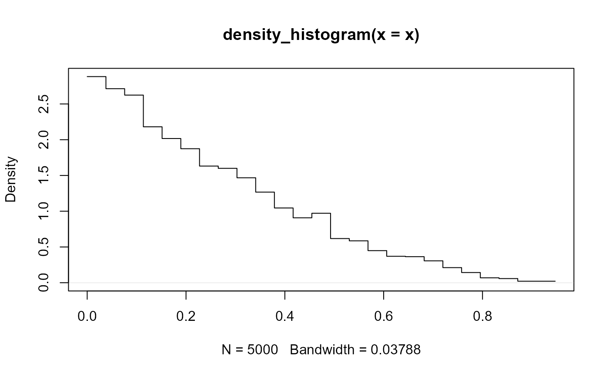

Histogram density estimator.
Supports automatic partial function application with waived arguments.
Usage
density_histogram(
x,
weights = NULL,
breaks = "Scott",
align = "none",
outline_bars = FALSE,
right_closed = TRUE,
outermost_closed = TRUE,
na.rm = FALSE,
...,
range_only = FALSE
)Arguments
- x
<numeric> Sample to compute a density estimate for.
- weights
- breaks
<numeric | function | string> Determines the breakpoints defining bins. Default
"Scott". Similar to (but not exactly the same as) thebreaksargument tographics::hist(). One of:A scalar (length-1) numeric giving the number of bins
A vector numeric giving the breakpoints between histogram bins
A function taking
xandweightsand returning either the number of bins or a vector of breakpointsA string giving the suffix of a function that starts with
"breaks_". ggdist provides weighted implementations of the"Sturges","Scott", and"FD"break-finding algorithms fromgraphics::hist(), as well asbreaks_fixed()for manually setting the bin width. See breaks.
For example,
breaks = "Sturges"will use thebreaks_Sturges()algorithm,breaks = 9will create 9 bins, andbreaks = breaks_fixed(width = 1)will set the bin width to1.- align
<scalar numeric | function | string> Determines how to align the breakpoints defining bins. Default
"none"(performs no alignment). One of:A scalar (length-1) numeric giving an offset that is subtracted from the breaks. The offset must be between
0and the bin width.A function taking a sorted vector of
breaks(bin edges) and returning an offset to subtract from the breaks.A string giving the suffix of a function that starts with
"align_"used to determine the alignment, such asalign_none(),align_boundary(), oralign_center().
For example,
align = "none"will provide no alignment,align = align_center(at = 0)will center a bin on0, andalign = align_boundary(at = 0)will align a bin edge on0.- outline_bars
<scalar logical> Should outlines in between the bars (i.e. density values of 0) be included?
- right_closed
<scalar logical> Should the right edge of each bin be closed? For a bin with endpoints \(L\) and \(U\):
if
TRUE, use \((L, U]\): the interval containing all \(x\) such that \(L < x \le U\).if
FALSE, use \([L, U)\): the interval containing all \(x\) such that \(L \le x < U\).
Equivalent to the
rightargument ofhist()or theleft.openargument offindInterval().- outermost_closed
<scalar logical> Should values on the edges of the outermost (first or last) bins always be included in those bins? If
TRUE, the first edge (whenright_closed = TRUE) or the last edge (whenright_closed = FALSE) is treated as closed.Equivalent to the
include.lowestargument ofhist()or therightmost.closedargument offindInterval().- na.rm
<scalar logical> Should missing (
NA) values inxbe removed?- ...
Additional arguments (ignored).
- range_only
<scalar logical> If
TRUE, the range of the output of this density estimator is computed and is returned in the$xelement of the result, andc(NA, NA)is returned in$y. This gives a faster way to determine the range of the output thandensity_XXX(n = 2).
Value
An object of class "density", mimicking the output format of
stats::density(), with the following components:
x: The grid of points at which the density was estimated.y: The estimated density values.bw: The bandwidth.n: The sample size of thexinput argument.call: The call used to produce the result, as a quoted expression.data.name: The deparsed name of thexinput argument.has.na: AlwaysFALSE(for compatibility).cdf: Values of the (possibly weighted) empirical cumulative distribution function atx. Seeweighted_ecdf().
This allows existing methods for density objects, like print() and plot(), to work if desired.
This output format (and in particular, the x and y components) is also
the format expected by the density argument of the stat_slabinterval()
and the smooth_ family of functions.
See also
Other density estimators:
density_bounded(),
density_unbounded()
Examples
library(distributional)
library(dplyr)
library(ggplot2)
# For compatibility with existing code, the return type of density_unbounded()
# is the same as stats::density(), ...
set.seed(123)
x = rbeta(5000, 1, 3)
d = density_histogram(x)
d
#>
#> Call:
#> density_histogram(x = x)
#>
#> Data: x (5000 obs.); Bandwidth 'bw' = 0.03788
#>
#> x y
#> Min. :3.377e-05 Min. :0.02112
#> 1st Qu.:2.321e-01 1st Qu.:0.30620
#> Median :4.736e-01 Median :0.90804
#> Mean :4.736e-01 Mean :1.05586
#> 3rd Qu.:7.151e-01 3rd Qu.:1.63131
#> Max. :9.471e-01 Max. :2.88251
# ... thus, while designed for use with the `density` argument of
# stat_slabinterval(), output from density_histogram() can also be used with
# base::plot():
plot(d)

# here we'll use the same data as above with stat_slab():
data.frame(x) %>%
ggplot() +
stat_slab(
aes(xdist = dist), data = data.frame(dist = dist_beta(1, 3)),
alpha = 0.25
) +
stat_slab(aes(x), density = "histogram", fill = NA, color = "#d95f02", alpha = 0.5) +
scale_thickness_shared() +
theme_ggdist()